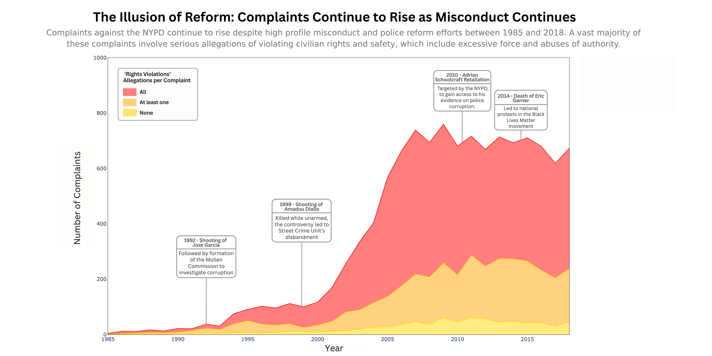
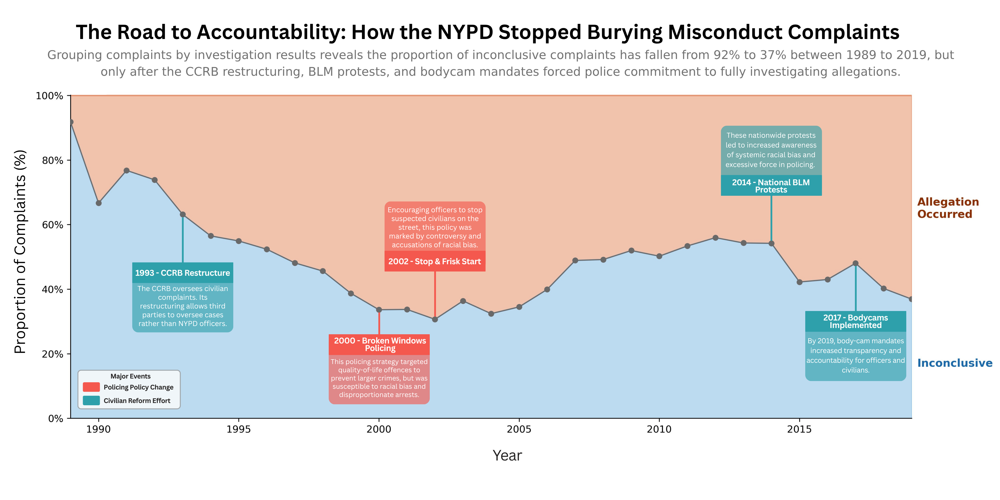

Proposition: Police reform efforts in the NYPD are not improving civilian experiences
FOR the Proposition

Design Decisions and Rationale:
- Grouping Transformation - Score: [-1.5]
- Each complaint often contains multiple allegations of different types (split into ‘Force’, ‘Abuse of Authority’, ‘Discourtesy’, and ‘Offensive Language’) against multiple officers, so we created the ‘Rights Violation’ grouping, combining the two most serious categories of allegations: Force and Abuse of Authority.
- Because most allegations are ‘Abuse of Authority’, grouping based on its presence in a complaint captured a large portion of complaints, especially those with only one allegation. For this reason, we find the design relatively deceptive.
- Color - Score: [1.5]
- The color encodes whether a complaint includes only ‘Rights Violation’ allegations, at least one ‘Rights Violation’ allegations, or none. We used a yellow, orange, and red discrete color encoding to represent the escalating order of severity between the classes and chose these colors because of their association with negativity, aggression, and danger in varying degrees. This helps drive our secondary point, that complaints are not only becoming more common, but that a majority involve serious allegations.
- While the color choice has a persuasive element to it, we believe it is an honest design choice.
- Area plot - Score: [-1]
- Rather than encoding the count over time with just a line, we used an area plot to emphasize the ‘ink’ filling up more space in the graph over time. This makes the dramatic increase in complaints more visually impactful, aided by the striking colors.
- We found this choice a bit deceptive because of its rhetorical power in favor of our point.
- Annotations - Score: [-2]
- We included a series of annotations marking significant events representative of NYPD misconduct and abuse over time. These events have connections to attempted reform efforts and larger public awareness of police misconduct. The use of these annotations and the increasing trend of the line create the impression that the NYPD is resistant to reform and change.
- We found this choice quite deceptive, since they imply a connection to the increasing number of complaints, which may actually be caused by other reasons.
- Y-axis/Number of Complaints - Score: [0.5]
- Our y-axis encoded the number of complaints each year in order to visualize the dramatic increase that occurs over time. While nothing about this count is being modified or hidden, the actual cause behind this vast increase is difficult to determine, as it vastly outpaces population growth and police employment levels, and may not be directly correlated to police-civilian relations.
- Thus, one deceptive element of the y-axis is the lack of consideration towards potential confounding factors that increase reporting frequency, like ease and knowledge of reporting.
AGAINST the Proposition

Design Decisions and Rationale:
- Board Conclusion Grouping - Score [-2]
- We created the ‘Inconclusive’ and ‘Allegation Occurred’ groupings based off of the 3 disposition outcomes of a complaint. The ProPublica data specifies that the first outcome, unsubstantiated, includes allegations not proven true, rather than those proven false, so we renamed the category ‘Inconclusive.’ We grouped the other two, substantiated and exonerated, into ‘Allegation Occurred’ as investigation found the allegation to have occurred in both cases, only differing by whether the conduct violated NYPD’s rules.
- These categories were named and grouped this way specifically to lend credence to our argument, so we find the choice very misleading.
- Color - Score [0.5]
- We chose to use the contrasting colors, blue and orange, for this plot in order to represent the two opposing outcomes of a complaint: ‘Inconclusive’ and ‘Allegation Occured.’ As we used orange for all non-inconclusive cases where the ‘Allegation Occured,’ the blue ‘Inconclusive’ area of the plot acts as the foreground due to the gestalt effect with the blue associating the focal point with a positive connotation to better support our argument. Both of these colors were made paler in order to emphasize the downward trend of the line in the center.
- The color choice is relatively honest, but does have an intended persuasive effect to it.
- Proportion/y-axis- Score [-1]
- Instead of raw counts on our y-axis, we chose to use the proportion of complaints that were inconclusive out of all allegations that occurred. We made this decision because the raw counts dramatically increase, as seen in our visualization arguing for the proposition.
- By normalizing the data, we are able to compare the relative number of allegations per year, also ‘hiding’ the dramatic increase in raw complaints after the new millennium. For this reason, we find this encoding relatively misleading.
- Annotations - Score [-2]
- Our annotations are a mix of landmark events in policing history and national movements that involved policing reform. We colored the annotations based on the event type: vibrant red for Policing Policy Change or vibrant teal Civilian Reform Effort. The contrast of the colors implicitly suggests the correlation of policing policy change with an increase in proportion of inconclusive outcomes and civilian reform efforts with a decrease as well as carry on the motif of blue/cool tones as positive and orange/red tones as negative. We chose vibrant colors to draw attention to the annotations at first glance.
- Whether these events are actually causal to these results are completely unknown, but events themselves were carefully chosen to match up with trends on the graph. For these reasons, we find these annotations quite deceptive.
- X-axis - Score [1.5]
- Our x-axis is the year in which the complaint was received. We narrowed the scope to 1989 to 2019 so that our plot fully spanned 3 decades, which we believed was a sufficient timeframe to see the trend of inconclusive complaints decreasing. Moreover, the data before 1989 and after 2019 was sparse, with too few data points from each year to draw meaningful conclusions from.
- We find this choice quite honest, though the cutoff helps remove ‘messier’ noisy data from earlier.
Final Reflection
The overall design process was much more difficult than we expected for both visualizations. We spent a great amount of time agonizing over details, both visual and conceptual, to best depict the trends in the data that supported and contradicted our proposition. Deciding the colors and visual encodings were straightforward, and we got more comfortable manipulating the axes and representing aspects of the data through color and distance as we explored the data and finalized our plots. One idea that we settled on early in the process was the blue-orange color scheme to denote the binary categories of ‘Inconclusive’ and ‘Allegation Occurred’ that acted as a larger motif for good and bad trends and events. The more difficult aspect was finding trends in the data that proved opposing sides of the proposition, which was surprising. Similar trends across different categories and features persisted even after extensive manipulation and grouping, so finding convincing and definite trends that proved opposite points was one of the most difficult aspects of our design process.
Another aspect of the process that was both difficult and surprising to us was creating a deceptive plot, as we had to navigate the edge between acceptable deception and blatant misinformation. We found that the bounds between “acceptable” persuasion and “misleading” ones were very blurred, and even small design choices could feel a little misleading because the entire visualization was created to prove a pre-existing viewpoint. As we worked, we defined acceptable persuasion as drawing from the data without misconstruing the trends of exploratory plots and keeping the spirit of the data intact. Blatantly misleading choices would be ones that showed trends or aspects that did not naturally appear in the data, making design decisions for the sole purpose of proving a preconceived idea, or withholding information because it introduced doubt. However, we ran into significant overlap between these two categories, finding that the decisions could fall into either based on our reasoning. We navigated this by drawing the line at misconstruing the data. For example, when deciding on the labels for the events that correlated with increasing or decreasing proportions of inconclusive complaints, we drew a firm boundary at pointing towards causation which was not seen in the data and opted for a naming that implied correlation, even though it might’ve strengthened our point.
When defining “ethical analysis and visualization,” we realized that intention and reasoning with proper execution determines how ethical an analysis is. We found that a major aspect of ethical analysis is being able to resist pursuing existing biases or preconceived notions if there is no evidence, especially if that data includes confounding variables. One of our early design ideas was based on our pre-existing knowledge of the effects of 9/11 on policing practices and racial biases, which led us to look for any trend in the data that supported our theory, even looking for external sources to supplement the dataset. However, we could not find any trends in the dataset that implied this without making nebulous leaps in logic or manipulating the data through cherrypicking methods. To adhere to our agreed ethical standards, we decided to move on from this idea and prioritize the validity of our visualization rather than manipulating the data in a dishonest manner to prove a preconceived, unfounded proposition. We think that these kinds of difficult, yet honest, decisions are key characteristics of ethical analysis, in which we give the data a voice of its own rather than allowing our biases to drive the conversation.